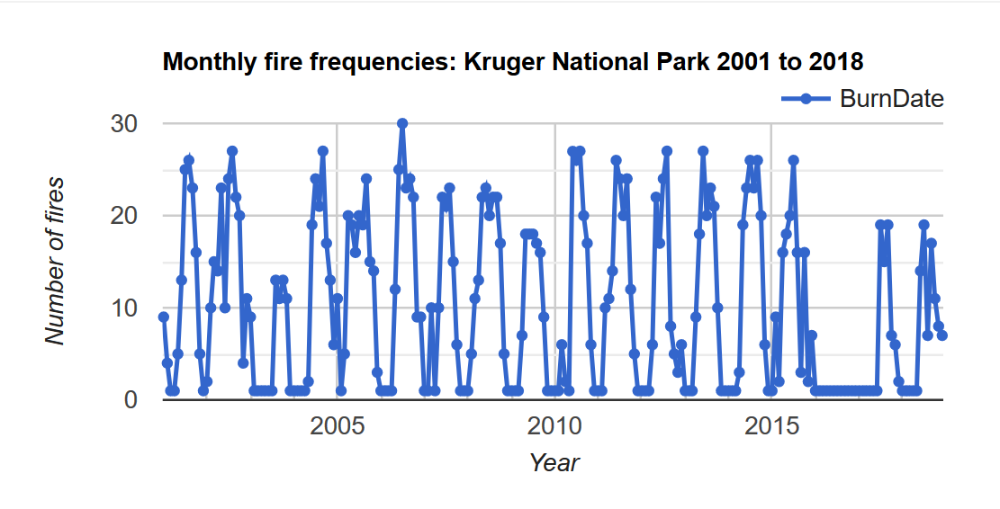
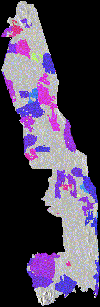

GOOGLE EARTH ENGINE FOR ECOLOGY AND CONSERVATION
Practical 5: Fire frequency in the Kruger National Park, South Africa
by Sandra MacFadyen @ https://www0.sun.ac.za/biomath
Access the practical script here.
Also please download the following shapefile delineating regional boundaries in Kruger.
Learning Objectives
By the end of this practical you should be able to:
- Access terrain model data from SRTM
- Access monthly burn scar data
- Generate a hillshade using SRTM data
- Explore long-term patterns of fire frequency
- Build an animation and output for use in, for example, PowerPoint presentations
Introduction
Fire is an important driver of landscape pattern, as different fire regimes directly affect biomass production, composition and structure of vegetation.
Indirectly, and together with other landscape features like geology, rainfall and topography, fire also influences animal distribution patterns.
In savanna systems, interactions between herbivory, fire frequency, fire intensity and season can alter tree:grass ratios and system states.
For example, in the Kruger National Park (Kruger) landscapes that are burnt frequently by high intensity fires generally have less woody cover than those
burnt less frequently, at low intensities. Fire regime can also influence vegetation composition, where fire adapted species may dominate in frequently burnt areas,
while those areas less frequently burnt may provide important refugia for more fire sensitive species (Smit et al. 2013).
Fire is therefore an important component for biodiversity conservation planning but how do we find information about fire frequencies,
intensities and seasons for our areas of interest if we haven’t monitored it directly?
GEE has a number of different datasets tagged "fire".
We'll just be looking at one in this practical but I encourage you to explore the others in your own time. Let’s get started……
Data import
In addition to datasets available on Google Earth Engine, in this practical we will learn how to import your own data (like shapefiles or raster grids)
into your workspace from your local hard-drive by uploading them as new assets (Fig. 1).
var dem = ee.Image("CGIAR/SRTM90_V4"); var FireCCI = ee.ImageCollection('ESA/CCI/FireCCI/5_1');
The first dataset, SRTM30, is a 30m Digital Elevation Model (DEM) from the Shuttle Radar Topography Mission (SRTM). The second, FireCCI51, is a Fire_cci Burned Area pixel product version 5.1 from MODIS. Figure 1 below, describes how to import the boundary shapefile for the Kruger National Park (Kruger) from files stored locally on your hard-drive. The process is similar to import image files (e.g. GeoTIFF or TFRecords), which we'll go through in class. Download and save the required files from here.

Figure 1: Process to upload a shapefile into GEE as a new assest imported into the script as a FeatureColection
Filtering data
First define your variables for the temporal and spatial windows of interest.
We will use these variables to filter our data before processing.
// Set your start and end dates to filter by var startDate = ee.Date.fromYMD(2001,1,1); var endDate = ee.Date.fromYMD(2018,12,31); var years = ee.List(fire.aggregate_array('year')).distinct().sort(); // Convert your imported "Table" asset to a geometry // You'll need it later for clipping ImageCollections var zones_geo = zones.geometry(); // Clip the DEM to Kruger var srtm = dem.clipToCollection(zones); // Filter the Burn Scars by date and clip using a function and set band properties var fire = FireCCI .select(['BurnDate','ConfidenceLevel']) .filterDate(startDate, endDate) .map(function(img) { // Use function to add year as property to each image return img .clip(zones_geo) .set('year', ee.Image(img).date().get('year')) .set('yrmnth',ee.Date.parse('YYYY_MM_DD', (img.get('system:index'))) .format('YYYY_MM')); }); print('Check fire', fire); // Use print() to check your results
Processing
Now build a function to remove all burn scars from the fire dataset that have a confidence interval of less than 50%.
// Define a function to remove all fires <50% confidence interval var confMask = function(img) { var conf = img.select('ConfidenceLevel'); var level = conf.gt(50); return img.updateMask(level).select('BurnDate'); //return only 'BurnDate' band};
Run the function and summarise the burn scars by the day-of-year (doy) most frequently burnt, followed by the the frequency areas are burnt in Kruger annually from 2001 until 2018.
// Most frequently burnt DOY var fireDOY_list = years.map(function(year) { return fire .filterMetadata('year', 'equals', year) // Filter image collection by year .map(confMask) // Apply confidence mask >50% .reduce(ee.Reducer.mode()).rename('fire_doy') // Reduce image collection by most common DOY .set('year', year) // Set composite year as an image property .set('system:time_start', ee.Date.fromYMD(year, 1, 1)); }); var doyFires = ee.ImageCollection.fromImages(fireDOY_list); // Convert the image List back to an ImageCollection // Frequency of days burnt var fireCnt_list = years.map(function(year) { return fire .filterMetadata('year', 'equals', year) // Filter image collection by year .map(confMask) // Apply confidence mask >50% .reduce(ee.Reducer.countDistinct()) // Reduce image collection by count distinct doy .set('year', year) ));// Set composite year as an image property .set('system:time_start', ee.Date.fromYMD(year, 1, 1 }); var cntFiresDOY = ee.ImageCollection.fromImages(fireCnt_list); // Convert the image List back to an ImageCollection
Summarise these results to represent the most frequently burnt day-of-year (doy) and the frequency areas have burnt in Kruger over the last 18 years (2001-2018).
var modFires = doyFires.mode().clip(knp_geo); var cntFires = cntFiresDOY.sum().clip(knp_geo);
Charting
To plot these results, first define your chart parameters (e.g. title and axis labels), then create the line chart,
incorporating these pre-defined chart parameters and print it to the console as follows:
xxxx

Figure 2:Line chart the number of days a fire occured in Kruger from 2001 to 2018
Visualisation
To visualise the long-term summaries of your results, first setup your map elements as you've done in previous practicals.
xxxx

Figure 3:Map with layers indicating the most frequently burnt doy-of-year (doy) and the fire frequency in Kruger from 2001 to 2018
Hillshade and Animation
xxxxxxxxxxxxxxxxxxxxxxxxxxxxxxxxxxxxxxxxxxxxxxxxxxxxxxxxxx
xxxx

Figure 4:Animation of days fires occurred in Kruger from 2001 to 2018. Light colours represent fires that happened earlier in the year, while dark colours are those that burnt in later months
Data Export
To export the animation, simply right mouse-click and select Save Image As… to save the animation locally as a .GIF file to your hard-drive.
As a last step is always "save your script".
xxxx
Figure 4:Animation of days fires occurred in Kruger from 2001 to 2018. Light colours represent fires that happened earlier in the year, while dark colours are those that burnt in later months
Practical Assignment #5
// To complete the practical exercise below share // your scripts and App URL with us, as described above // !NB! Remember to add the prac number in the header // Also see https://biomath-lab.github.io/OTS-GEE/pages/4_prac.html for more help // ----------------------------------------------------------- // Generate your own App using rainfall or any other climate variable* // to describe how values differ from one region to the next // * Don't forget CHIRPS is only available for the Southern Hemisphere // [HINT: Lines 213 to 288] // Go crazy! I cant wait to see what you come up with :)
Please share your feedback on this practical by completing this quick (2 min) survey. Thank you.